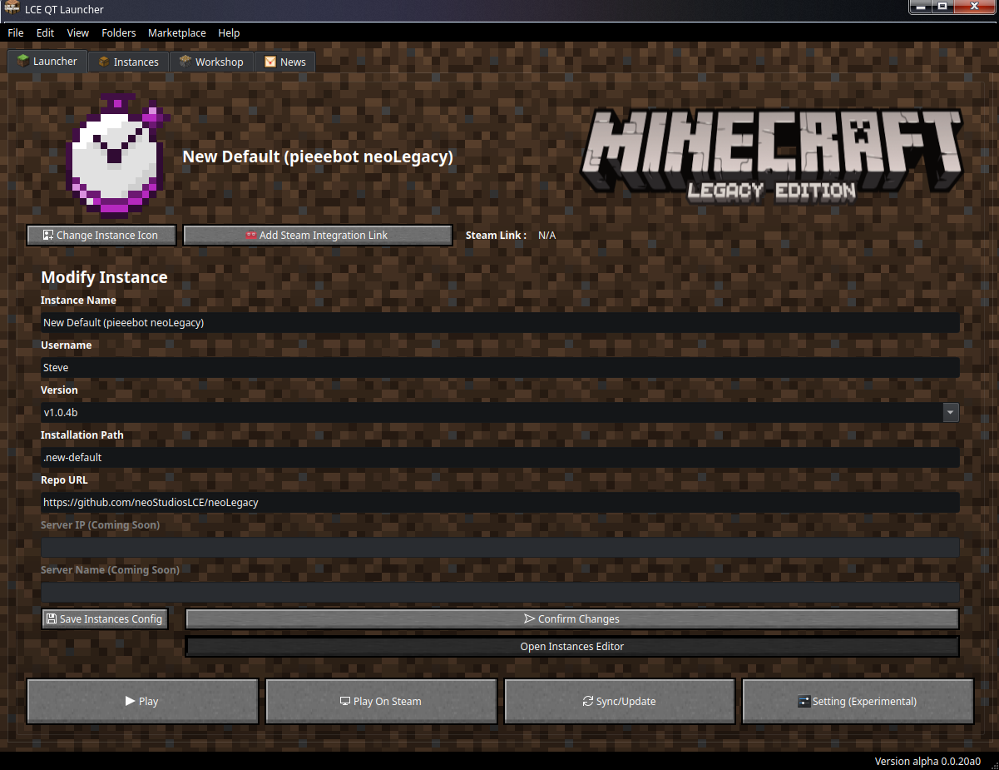

LCE Qt Launcher

- Autre dépôt:
[!AVERTISSEMENT]
Ce lanceur est en cours de développement et ses fonctionnalités peuvent être modifiées ou supprimées à tout moment.
GPLv3 licence et le Code de respect
[!INFORMATION]
La mise à jour et l'installation automatiques des fichiers du jeu sont instables et non viables. Il est recommandé d'avoir les fichiers du jeu déjà installés.
En effet, le mécanisme d'installation et de mise à jour nécessite un dépôt externe qui peut être fermé sans préavis. Je fais de mon mieux et les versions nocturnes sont souvent à jour, mais la version stable est parfois en retard et nécessite une intervention manuelle.À propos
Ceci est un lanceur LCE personnalisé pour Minecraft, écrit avec PySide6 (Qt6 pour Python), compatible avec Freedom et GNU/Linux.Pourquoi un lanceur LCE Qt?
- Développé en Python avec Qt 6: léger et compatible avec le thème Plasma 6/Qt 6 de GNU/Linux.
- Intégration avec les outils de la communauté.
- Compatibilité GNU/Linux optimale.
- Licence copyleft (GPLv3), donc sans logiciel tiers.
- Launcher Libre.
Fonctionnalités
- Interface en ligne de commande (CLI)
- Prise en charge de plusieurs instances
- Configurations préétablies :
- NeoLegacy (Par défaut)
- MCLCE/MinecraftConsoles (sauvegarde du code source uniquement) (anciennement smartcmd/MinecraftConsoles)
- LCE-Revelation
- Mod Aether
- Places de marché :
- Actualités intégrées pour les instances
Objectif à long terme / Feuille de route
- Accessibilité
- Prise en charge des thèmes
- Compatibilité GNU/Linux
- Prise en charge de Windows
- Prise en charge expérimentale de FreeBSD et Nix/NixOS
- Prise en charge de Flatpak
- Prise en charge d'AppImage
- Prise en charge des localisations
- Un seul et même endroit pour tout ce qui concerne Minecraft LCE sur GNU/Linux
Configuration logicielle requise
- uv ou hatch
- Python 3.10 à Python 3.12 (pour la version Nuitka, le paquet système et la version portable de Python peut être supérieure)
Un serveur d'affichage ou un compositeur
Pour les systèmes de type UNIX
- Un serveur d'affichage ou un compositeur
- Bash (normalement préinstallé sur Linux, mais souvent requis sur *BSD et macOS)
- Pour Windows
- PowerShell
Recommandations logicielles
- Police Monocraft installée
- Miracode Font
- Steam, Steam Tinker Launch et Valve Proton pour une meilleure prise en charge de GNU/Linux, Proton n'est pas requis pour Windows
Bibliothèques et outils Python utilisés
- PySide 6
- platformdirs
- rich
- hatch
- uv
Systèmes d'exploitation compatibles
Support Gold
[!NOTE]
Plateforme testée régulièrement et avec implémentation/correctif finalisé
- Windows 10 et plus tard
- GNU/Linux
Prise en charge expérimentale
[!NOTE]
Plateforme testée avec une implémentation en cours de développement
- NixOS
- Portage FreeBSD & dans venv (portable)
- AppImage
Plateforme à venir
[!NOTE]
Plateforme non testée, mais avec une implémentation
- Flatpak
Systèmes d'exploitation non pris en charge
[!NOTE]
Ces plateformes n'ont pas été testées et peuvent fonctionner ou non.
- Autres systèmes *BSD, car Minecraft LCE n'est pas pris en charge sur ces systèmes et Wine n'est pas disponible.
- Minecraft LCE sur Android est actuellement assez lent et bogué.
- macOS : LCE Qt Launcher ne prend pas officiellement en charge macOS et n'est pas testé lors des PR et des tests. Il n'existe pas de package pour macOS. Il n'existe aucune documentation à ce sujet. Cependant, un utilisateur expérimenté pourrait y parvenir.
Remerciements spéciaux à
- Prism Launcher pour certains éléments d'interface utilisateur et fichiers d'interface utilisateur
- MCLCE/MinecraftConsoles communauté pour le portage du jeu sur PC
- communauté neoLegacy pour le rétroportage des mises à jour pour le portage PC
- communauté LCE-Revelation
- Communauté LCE Hub pour le Marketplace/Atelier
- Communauté MinecraftLegacy pour inclure mon lanceur dans leur liste
- Police Miracode
- Police Monocraft
- Steam Tinker Launch pour l'intégration de Steam et SteamDeck sur GNU/Linux via leur logiciel.
- et aussi tous les membres de la communauté LCE pour perpétuer l'héritage de Legacy Console Edition et d'où proviennent certaines ressources graphiques.
- et à Notch (Markus Persson), 4J Studio et Mojang sont à l'origine de ce jeu.
Code de conduite
Licence